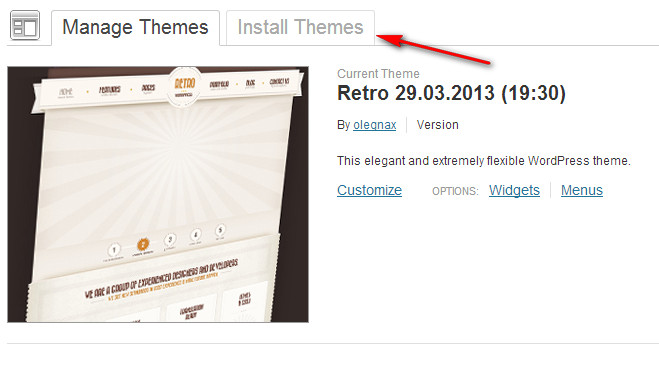
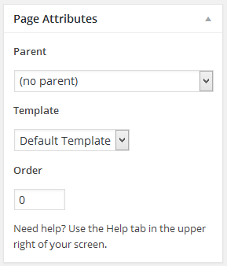
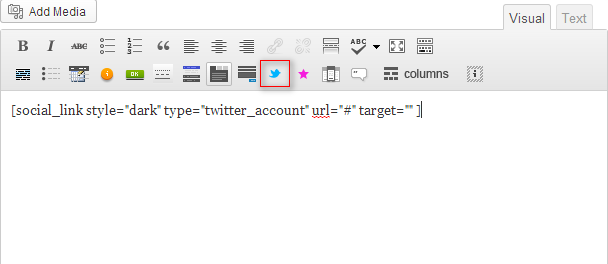

"Retro" - WordPress Theme
Updated: 25/05/2015
By: Olegnax
Thank you for purchasing our theme. If you have any questions that are beyond the scope of this help file feel free to post a message on our help forum
Theme Installation
Install your WordPress theme
Theme Configuration
Content Setup
Additional theme functionality & features
Shortcodes
To grant a better user experience, we've added built-in buttons with theme shortcodes to the editor. Learn more
Shop
Our theme comes with advanced woocommerce plugin integration to provide shop functionality. Learn more
Theme translation
Our theme is translation-ready. You can translate it to any language as well as set it up for multiple languages. Learn more
Other
PSD Files Support
This theme has been created for Wordpress 3.5 and newer versions. Before the installation make sure your current version is compatible with the theme. If it's not, please, upgrade Wordpress to 3.5 version or higher.
In other words, all you need to do is upload the "retro" folder from our archive to the "wp-content/themes" directory in your hosting account ("wp-content/themes/retro" that's how it should look like).
Other than the option above, you can use the "Install theme" function from the dashboard and upload the "retro.zip" folder from our archive.
Once the theme is uploaded, activate it from the Wordpress admin panel by clicking on the "Activate" link in the "Appearance -> Themes" section.
For more detail see the instructions below.
Installation:
At first choose the method that suits you most – using WP dashboard or FTP client.
The easiest method to install a theme is to use the WP dashboard. However, when it's not possible to use the Admin Panel, a theme can be installed via FTP. Here we'll describe both ways.
1.Installation via FTP
a) Extract the files from the theme archive using any decompression program you have installed. Be sure to keep the original folders' structure to ensure a correct theme work.
b) Connect to your site FTP directory either using your hosting provider CPanel or an FTP/SFTP client like Total Commander or Filezilla.
Tips how to use Filezilla are here
Total Commander user guide is here
c) Upload the extracted theme files to the "/wp-content/themes" folder
2.Installation via WP dashboard
a) Log into the WP administration panel
b) Click on the "Appearance" button in your Dashboard and then hit "Themes"
c) Switch to "Install Themes" tab

d) Click on the "Upload" link in the upper sub menu and choose the *.zip file with the theme you downloaded earlier. Hit "Install Now" button
Note: You do not need to extract theme files if you install a theme via Dashboard: Wordpress will do it for you.
Theme Activation
a) Login to the WP administration panel
b) Go to "Appearance" tab -> choose "Themes" option
c) Go to "Manage Themes" tab
d) Click on the Retro theme screenshot. A theme will appear in the preview mode
A preview mode gives you the posibility of applying some of the theme options straightaway. To make changes expand the tabs & apply your corrections.
e) Click on the "Save & Activate" button at the top left corner to activate a theme.
Note: you can skip "Preview mode" settings and activate a theme right away if you click on the "Activate" link underneath the theme screenshot.
Note: Once a theme is activated, you'll be promted to fill a site with the dummy content. It's strongly recommended that you skip this option if you're installing a theme on a live site.
Known problems when installing a theme
1. “Broken theme and/or stylesheets missing”
That means that the theme has been uploaded to the server incorrectly and the missing stylesheets went to a wrong folder.
In order to fix this issue, try one of the following:
A. Make sure you have extracted the theme files. It contains documentation and .psd files besides the actual theme files. You need to upload theme files solely.
B. Look for the folder where the "style.css" file is. This is the actual directory you need upload to the "/themes" folder.
In other words the destination "/wp-content/themes/themename/themename/style.css" will cause the "missing stylesheet" error. A correct path should look like "/wp-content/themes/themename/style.css"
C. Make sure you activated the theme
2. Problems with uploading via WP admin panel due to the Upload limit.
You can check the file upload limit on the Media Uploader page in WordPress. Depending upon the web hosting company and the conditions of the service they provide it may vary. The most common limit is about 8MB.
Since some of the advanced themes don't fit into the limit, the maximum file upload size should be extended. You can do it using one of the following options:
1. Through functions.php file:
Add the following code to the functions.php file of your theme:
1
2
3 |
@ini_set( 'upload_max_size' , '64M' );
@ini_set( 'post_max_size', '64M');
@ini_set( 'max_execution_time', '300' );
|
2. Through PHP.INI file:
In case you cannot see the php.ini file in your directory, create a new one with the code below and upload it to the root folder of your web server.
If you can see the php.ini file, then add or adjust such parameters as:
1
2
3 |
upload_max_filesize = 64M
post_max_size = 64M
max_execution_time = 300
|
In case you can't save a file with 64MB values, try to do it with 10MB.
3. Adjusting .htaccess file
You can either modify the existing .htaccess file in the root directory or create a new one.
Add the following piece of code to the file:
1
2
3
4 |
php_value upload_max_filesize 64M
php_value post_max_size 64M
php_value max_execution_time 300
php_value max_input_time 300
|
You can reset all of the settings made for every theme section using our custom panel: just click on the "Reset" button on the bottom of the screen.
Once a theme is installed you get a clean WordPress installation. Please, note that it does include dummy content but it needs to be installed manually
Warning! Dummy content is not required for the correct theme work.
It's strongly recommended NOT TO INSTALL dummy data on a live website. It will corrupt your existing content. We suggest that you install dummy data on a clean WordPress setup only.
Our theme is provided with many features that require additional setup.
Please, look through this help guide thoroughly to avoid mistakes and get the most from the options offered.
On the General Settings page you can find options that affect the entire site such as fonts, a site favicon, content colors, background settings etc.
To edit general settings go to Theme Options -> General page in your Dashboard.
Body background settings
These options are aimed to help you change the site background in few easy steps. The background can be set either to a single color or to an image and then edited up to your needs.
"Body background color" sets a color used as a site background.
"Body pattern image" is an image that is used as a site background
"Body pattern repeat" sets if/how an image should be repeated
"Body pattern attachment" sets whether a background image is fixed or scrolls with the rest of the page
"Body pattern horizontal position" sets the starting horisontal position of a background image
"Body pattern vertical" sets the starting vertical point of a background image
Page background settings
These options will help you make changes to page background. The background can be set either to a single color or to an image (pattern) and then edited up to your needs.
"Page background color" is a default color scheme for all of the site pages. It can be changed directly from a page later on.
"Page pattern image" is an image that is used as a page background
"Page pattern repeat" sets if/how an image should be repeated
"Page pattern attachment" sets whether a page background image is fixed or scrolls with the rest of the page
"Page pattern horizontal position" sets the starting horisontal position of a page background image
"Page pattern vertical" sets the starting vertical point of a page background image
Content background settings
"Content pattern image" is an image that is used as a background for content area
"Content pattern repeat" sets if/how an image should be repeated
"Page pattern attachment" sets whether a page background image is fixed or scrolls with the rest of the page
"Page pattern horizontal position" sets the starting horisontal position of a page background image
"Page pattern vertical" sets the starting vertical point of a page background image
Please, note that the options above are global and they will be applied throughout your site.
However, you can set custom background settings for every page/post. If background settings are adjusted from a page/post directly, the global properties will be overridden.
Color settings
These options help you manage color schemes of the following objects (by default they are used against light background):
- texts, headings and links
- widget titles, content & links
- accents
Choose Google font for titles
Here you can adjust a title font, its variant and subset for the entire site: just choose one of the available Google fonts from the drop-down list.
A font preview will appear in the box above the list.
Google Font is applied to a site if "Check to disable Google Fonts" option is turned to OFF.
Check to disable Google Fonts
If you'd like to turn Google Fonts off, you can do it from the administrative panel directly. Once a switcher is set to "ON", a default theme font is used (BazarMedium).
Use default theme font BazarMedium
By default Retro theme uses a font that is not presented in the Google fonts set. If you'd like to keep it for your site, toggle the button to ON. If both BazarMedium and Google Font are disabled, a default font set is used ("Choose a font family for content" option)
This font doesn't support cyrillic or other special characters.
Check to disable Font Awesome
This options allows you to disable Font Awesome library that is integrated in the theme.
Choose a font family for content
This option helps you change a content font & its style throughout the website. Use one of the specified font sets that fits your site the most.
Choose a font style for content
This option specifies a font content style
Favicon
Favicon is a small icon that browsers display in the address bar to make a website more recognizable, for instance in bookmark services or history lists.
To set a favicon for the site, click on the "Upload" button. Please, make sure your image has a proper extension before the upload: the file should be in *.ico format.
Disable Responsive
This option will disable responsive layout, so on mobile devices your website will look the same way like it does on PC.
Theme Skin tab lets you choose one of the available color schemes for a site.
To apply a skin, choose a needed option from the drop-down list & hit "Save" button.
The Header tab contains all of the configuring options for the header part of the website including a logo, a top line and a site menu.
To edit Header settings navigate to Theme Options -> Header page in your Dashboard.
Top Tail Pattern Settings
These options specify pattern, its color and position for the line above the menu.
Top tail background color sets a color for the top line above the menu.
Top tail pattern image is an image used over the top tail color for effect creation
"Top tail pattern repeat" sets if/how an image should be repeated
"Top tail attachment" sets whether a top tail image is fixed or scrolls with the rest of the page
"Top tail pattern horizontal position" sets the starting horisontal position of a top tail image
"Top tail vertical" sets the starting vertical point of a page background image
Top Line Color Settings
These options specify text and links color settings for the line above the menu.
Top line text color
Sets text color put in an additional header content.
Top line links color
Sets links color that appear in a top line section.
Top line hover links color
Sets links hover color that appear in a top line section.
Menu Settings
These options specify color settings for the main navigation menu.
Menu text color
Sets a chosen color to menu items. Colors can be provided in HEX format or chosen via color picker.
Menu acive text color
Helps you apply a custom color to menu buttons text when hovered and visited.
Logo Settings
Use Custom Logo Image
If you've got a logo image already, you can apply it to the site from the admin panel directly using the "Upload" button.
Logo Position
Specifies the area where a logo appears.
Hide logo image
To disable a logo image, toggle a button to "OFF".
If you have issues uploading images, check the permission levels of your Wordpress files. They should be set to 644 for files and to 755 for directories.
Logo Text Properties
In order to use the following options, please, make sure you have disabled a logo image. By default a logo text is the same as a site name.
Logo text color
Lets you apply any color to a logo text.
You can either provide a HEX code or use a color picker next to the field area.
Logo Font
Lets you change a logo font by using one of the options from the drop-down list.
Logo Font Style
Helps you apply a font style to the logo
Logo Font Weight
Sets how thick or thin characters in logo text should be displayed
Logo Text Size
Sets the size of the logo text
Header custom content (left-hand & right-hand area)
Custom Content is a built-in text editor that help you add various text information to the top area.Here you can add formatted text and links.
The information will be displayed on the top right/left corner of the top line.
*Following options will appear once WooCommerce plug-in is installed and activated.
Hide my account link
Show/hide "My account" and "Login" links at the top line of the website. Will be displayed on every page of the website.
Hide shopping cart
Show/hide shopping cart at the top line of the website. Will be displayed on every page of the website.
Footer tab helps you adjust footer background settings & color text settings.
Along with that here you can change footer copyright text, apply a custom logo & provide a Google Analytics tracking code
To edit Footer settings navigate to Theme Options -> Footer page in your Dashboard.
Footer Background Settings
These options specify color settings for footer area.
Footer background color sets a color for the footer area.
Footer pattern image is an image used over the footer color for effect creation
"Footer pattern repeat" sets if/how footer pattern should be repeated
"Footer attachment" sets whether a footer image is fixed or scrolls with the rest of the page
"Footer pattern horizontal position" sets the starting horisontal position of a footer pattern image
"Footer vertical" sets the starting vertical point of a footer pattern image
Footer color settings
These options help you manage color schemes of the following objects:
- copyright message
- widget headings, content and links
Colors can be provided in HEX format or chosen via color picker.
Footer Custom Logo Image
Here you can specify a custom image for the footer area. Click on the "Upload" button to add an image to footer.
Hide logo image
To disable a logo image, toggle a button to "OFF".
Enable footer widget area
If turned to "ON", widgets can be added to the footer area.
Columns number for footer widgets area
Specifies the amount of columns used to display widgets in footer.
Footer text
This is an area on the bottom left corner of your site where you can place a copyright and disclaimer notice, etc. The field supports HTML markup.
Google Analytics
A placeholder for the Google Analytics tracking code. To get a code sign up at official website & set up your account.
Footer custom content
Custom Content is a built-in text editor that help you add various text information to the footer area.Here you can add formatted text and links, social links & share buttons
The information will be displayed on the bottom right corner of the site.
This section specifies general blog settings and the way posts are rendered.
To adjust blog settings navigate to Theme Options -> Blog page in your Dashboard.
Sidebar position for blog listing
This option specifies a position of a sidebar used on a blog listing page
Sidebar for blog listing
Using this drop down list you can set a sidebar for a blog listing page
Blog Listing Template
Allows you to set whether your blog listing page will be displayed with fullwidth thumbnails and description below or with square thumbnails and description to the right of it.
Disable Excerpts
Switch to "OFF" to display full posts on a blog listing page. Otherwise a post excerpt will be used.
Disable about author box
If enabled, this option removes the author block from the bottom of a post page.
Sidebar position for single post
This option specifies a position of a sidebar used on a blog post page
Sidebar for single post
Sets a default sidebar for a blog post page
This section specifies general portfolio settings and the way portfolio posts are rendered.
To adjust settings navigate to Theme Options -> Portfolios page in your Dashboard.
Sidebar position for portfolios listing
This option specifies a position of a sidebar used on a portfolio listing page
Sidebar for portfolios listing
Using this drop down list you can set a sidebar for a portfolio listing page
Side content position for single portfolio post
This option specifies a position of a side text used on a portfolio post page
Slug Settings
Here you can set custom slugs for portfolio posts and categories.
Testimonials Settings - top
This section specifies general testimonials settings and the way they are rendered.
To adjust testimonials settings navigate to Theme Options -> Testimonials page in your Dashboard.
Sidebar position for testimonials listing
This option specifies a position of a sidebar used on a testimonials listing page
Sidebar for testimonials listing
Using this drop down list you can set a sidebar for a testimonials listing page
Sidebar position for single testimonial
This option specifies a position of a sidebar used on a testimonial page
Sidebar for single testimonial
Sets a default sidebar for a testimonial page
Slug Settings
Here you can set custom slugs for testimonials and categories.
By default all posts are displayed on the main page of a site. They can be structured with the help of categories and tags.
Global blog settings - top
The information regarding general blog setup can be found on Blog global settings page.
Posts
All of the options dedicated to post management are located under "Posts" section in the admin panel.
Create Post Categories
A category is a great way to organize content. They can be added at any time you're working on posts and easily edited afterwards.
To create a category go to Posts -> Categories.
Category creation is pretty straight-forward but some of the options come with the Retro theme only so we're going to describe them here.
Post listing template helps you specify the way featured images are displayed on a blog listing page.
Layout specifies a page layout used for a category on a listing page
Sidebar option helps you apply a specific sidebar to a category page (a page that contains all of the posts under certain category)
Items per page is a number of posts that will be displayed on a category page.
Slideshow type specifies whether to use a slideshow on a page or not.
Slider applies a certain slideshow to a category page.
Create a Post
To create a new post, go to Posts -> Add new.
Once a page reloads you'll see a content editor (1) with all of the post management options.
Besides built-in Wordpress features, our content editor contains shortcode buttons (2) and metadata section (3-7). Metadata helps you assign different properties to organize your content in the best way.
2 important steps in post creation process are:
- assign a category (3)
- set featured image (7)

Assign a category
To the right of the content editor "Categories" metabox is located. When you check a needed category on the right, it is applied to a post.
If none of the available categories fits, please, follow the steps below:
1. Click on the "Add new category" link
2. Type in a category name & choose its parent if needed
3. Hit "Add New Category" button
4. Choose the newly created category from the list
Layout
This metabox helps you set a page layout & choose a sidebar for a post
Choose the needed options from the drop-down lists to apply them to a post. Setings will be saved along with a post.
Featured Image
If you'd like to display image thumbnails on a blog listing page, in a popular post widget, etc., then you'll need to set a featured image for your posts.
1. In the "Featured Image" section click on the “Set Featured Image” link
2. A new “Set Featured Image” window will pop up. Choose an image from the uploaded pictures or submit yours through the "Upload Files" link
3. Hit “Set featured image” button to apply changes
Slideshow Options
Here you can set a slideshow that will be used on the top of a post page.
To remove a slideshow choose "Disable" from the "Slideshow" drop down list.
Additional Bottom Content
In case you need to add more information & separate it from a post itself, you can use "Additional bottom content" block.
It replicates all of the features presented in a post editor & puts content right above the footer area.
Set Blog page
When your posts are ready you may need to set a blog posts page.
1. Firstly you need to create a page that will be used as your blog page.
2. Then go to Settings -> Reading, check "Static Page" option and choose the page you've created from the drop-down list.
3. Hit "Save Changes" button
You can easily create a page via Admin Panel & give it a unique look using one of our page layouts.
Page templates are presented in the "Page Attributes" section and can be changed at any time during the creation/editing process.
At the moment 4 layouts are available: default (a standard full-width page layout), page with the left sidebar, page with the right sidebar and contact page.

Contact Page Setup
To create a contact page go to Pages -> Add New
In the "Page Attributes" section choose "Contact" from the Template drop down list
You can set up a front page in 2 ways:
- using a static page from the "Pages" library;
- using a blog listing page with the latest posts
If you decide to give a try for the first option, you need to create a page and then make it a front page:
1. go to Settings -> Reading
2. tick "A static page" option and choose a needed page from the drop down list.
If you'd like to display recent posts on a front page (as it's in our preview), check "Your latest posts" option.
We've developed a custom solution for portfolio management. Its options will help you to arrange your works/images in just a few clicks.
Global Portfolio settings - top
Read more about global portfolio preferences in
Portfolio global settings section.
Portfolio post settings - top
Portfolio Posts
All of the options dedicated to portfolio post management are located under "Portfolios" section in the Admin panel.
Introduction
Portfolio creation procedure consists of 3 steps:
- create portfolio posts & fill them with the content
- set featured image
- assign portfolio posts to categories
Create Portfolio Category
The easiest way to organize your portfolio posts is to split them into categories. This can be done at any time you're working on a post.
To create a portfolio category go to Portfolios -> Portfolio Categories.
Besides the default options here you can set a page layout, choose a sidebar and a slideshow for a listing page.
Create Portfolio Post
To create a new portfolio post, go to Portfolios -> Add new.
Once a page reloads you'll see a content editor (1) with all of the post management options.
Besides built-in Wordpress features, our content editor contains shortcode buttons (2) and metadata section (3-7). Metadata helps you assign different properties to organize your content in the best way.
2 important steps in post creation process are:
- assign a category (3)
- set featured image (7)
Assign a category
"Portfolio Categories" metabox is located to the right of the Content Editor.
When you check a needed category, it is applied to a current portfolio post.
If none of the available categories fits, please, follow the steps below:
1. Click on the "Add new category" link
2. Type in a category name & choose its parent if needed
3. Hit "Add New Category" button
4. Your post will be automatically assigned to the newly created category.
Layout
This metabox helps you set a page layout for a portfolio post. At the moment 4 layouts are available:
- Global (uses a layout specified in Portfolio Global Settings)
- Fullwidth (a post occupies full page width)
- Left sidebar (a specified sidebar will be displayed on the left)
- Right sidebar (a specified sidebar will be displayed on the right)
Select a needed option from the drop-down menu to apply it to a portfolio post.
Featured Image
If you'd like to display image thumbnails on a Portfolio listing page, in the "From Gallery" widget, etc., then you'll need to set featured images for portfolio posts.
1. In the "Featured Image" section click on the “Set Featured Image” link
2. A new “Set Featured Image” window will pop up. Choose an image from the uploaded pictures or submit yours through the "Upload Files" link
3. Hit “Set featured image” button to apply changes
Portfolio Slider
This metabox help you set up a slideshow that will be diplayed on a current portfolio post page
- Upload an image by clicking on the "Upload Image" button
- Click on the "Add New Slide" button if you'd like to have several images in a slideshow
Portfolio Options
Live URL
Specifies a custom URL that appears as a button underneath:
- a post description on a portfolio listing page when "Big" portfolio layout is set
- on the bottom of a portfolio post
Live URL button text
This is a text for the Live URL button
Open link in new window
When checked, a link will be opened in a new tab/window
Hide More Button
When option is checked, a full post is opened when title is clicked
More button text
Is a custom title for "More" link that appears underneath a portfolio post description. When you click on a button, a post is opened
Show featured image inside portfolio post
When this option is checked, a featured image is included in the post content
Lightbox Options
Use lightbox
This option lets you display a portfolio image in a lightbox when an image thumbnail is clicked on a portfolio listing page
If the option is unchecked, an image thumbnail opens a portfolio post.
URL
Here you can set a custom image that will be opened in a lightbox
1. Only featured and custom images can be displayed in a lightbox.
2. You can set one featured image per post only
Portfolio additional side content
Here you can add content that will be shown in the left/right sidebar in a portfolio post.
Additional side content doesn't include widgets and is mostly used to display various content
How to Display Portfolio
We have integrated Porfolio shortcode to the default Wordpress editor that will help you add multiple portfolio instances wherever you need: to a page content area, additional content area, or even to a widget.
1. When you have portfolio posts ready & assigned to categories, go to Dashboard -> Pages -> Add New tab to create a new page
2. When you're in the Vusial mode, click on the Portfolio shortcode button. A pop-up window with additional editing options will appear.
3. Choose the portfolio category you'd like to display, a portfolio layout, number of posts & hit "Insert" button.
4. Publish a page
We've developed a custom solution for testimonials management. Its options will help you present feedback from your customers in just a few clicks.
Global testimonials settings - top
Read more about global testimonials preferences on Testimonials global settings page.
Testimonials Settings - top
All of the options dedicated to testimonials post management are located under "Testimonials" section in the Admin panel.
Introduction
Testimonials creation procedure consists of 3 steps and it's pretty similar to blog post:
- Create testimonials in Dashboard -> Testimonials -> Add New
- Fill them with the content
- Assign testimonials to needed categories
Testimonials Options
Testimonials come with advanced editing options that let you present your customers feedback the best way.
Testimonial Options
Lets you add customer's name and position underneath a testimonial message.
Slideshow Options
Here you can set a slideshow that will be used on the top of a single testimonial post.
To remove a slideshow choose "Disable" from the "Slideshow" drop down list.
More ways to display testimonials
Testimonials can be also added:
To learn how to add testimonials as a widget, please, go to "Widgets" section
To add testimonials as a shortcode check this guide
Slider Revolution lets you add several elements to one slide at once to make it dynamic and multiple.
Now you do not need to install any plugins - this slider comes with the theme by default.
We have added a posibility to display titles under slides numbers. If you'd like to keep just numbers, leave "Title" field empty
Our theme comes with unlimited sidebar instances. You can display a different set of widgets for every page/post in the left hand area of the theme.
To manage sidebars navigate to Theme Options -> Sidebars page in your Dashboard.
Add/Remove Sidebar Instances
To create a new sidebar type in a new sidebar name and click on the "Add Sidebar" button.
Sidebars names may only contain uppercase and lowercase characters, numbers and underscores. The rest of the characters are not allowed due the WordPress policies. If any of restricted symbols are used, they will be removed from the sidebar name.
All of the created instances are listed underneath the "Add Sidebar" button. To remove a sidebar click on the "Delete" button next to its title.
Add widgets to a sidebar
When sidebars are created you can add widgets to them.
To add a widget to a sidebar, navigate to Appearance -> Widgets page. All of the available sidebars will be listed in the right-hand column under the "Default" sidebar.
Expand the sidebar you'd like to work on & drag the desired widgets to it.
Using a sidebar
When you're adding/editing your posts or pages there is a section called "Sidebar" in the "Layout Type" metabox.
To apply a sidebar to a certain post/page, choose it from the "Sidebar" drop-down list and hit "Update" button.
The sidebar will appear to the left/right of a post/page depending on a chosen layout.
To get to the menu preferences go to Appearance-> Menus in your dashboard. This is a page you organize and setup your menus from.
Menu items are arranged using a simple drag'n'drop scenario.
Menu background color gets the color of the top tail pattern image.
You can have more than 1 menu on your site: header menus will be used sitewide and the others can be arranged with the help of "Custom Menu" widget and placed either in the footer area or in a sidebar.
Setting up menu is intuitively clear, but if you happen to have any issues, check this user guide.
Screen Options
On the top right corner of the menu editing page "Screen Options" tab is located. This tab lets you manage modules and options that are displayed on a page.
Tick the blocks you'd like to display in order to add them to a page. If some of the options are no longer needed, uncheck them to remove from a page.
To close "Screen Options" tab click on its title.
Modules Management
Modules in the left column can be re-arranged if need be. To do so, hover the mouse over a module title and drag it to a new location, holding your left mouse button down.
Create Menu
To create a new menu navigate to Dashboard -> Appearance -> Menus. Then type in a new menu name & hit “Create Menu” button.
All of your menus are presented in a dropdown. You can switch from one menu to another by selecting the necessary menu.
Add Menu Items
Now when the menu is created, you can add items to it. To add an item to a menu, check a page title you'd like to have as a menu item & hit "Add to Menu" button. If you need to add an external link, you can do it through the "Custom Links" section.
To re-arrange menu items, drag them around holding the left mouse button down.
Sub Menus
To make a menu item a sub menu instance, hover the mouse over its title, and, holding the left mouse button down, move it under the needed option. When you're done with the changes, click on the "Save Menu" button.
Display a Menu
To apply a menu to a site, choose it from the drop-down list in the "Theme Locations" section and press "Save" button.
Custom Link
To add an external link to a menu, go to "Custom Link" section, provide a link & an item title -> press "Add to Menu" button.
To disable a menu link (make it non-clickable), create a “Custom Link” and set the URL value to “#”.
“Custom Menu” Widget
Custom Menu widget helps you use an additional menu on a page. This is a great asset if your main navigation is too broad or the needed options are related to certain pages only.
To set up the "Custom Menu" widget, go to Dashboard -> Appearance -> Widgets and drag the widget to the sidebar you'd like to use.
Select one of the menus from the drop down list and save your changes.
Widgets are located under Appearance -> Widgets.
To add a widget to a sidebar, hover the mouse over a widget title and, holding the left mouse buton down, drag it to a needed sidebar on the right.
Contact form
Adds a fully functional Ajax contact form to a site.
Feedburner Email Subscribe
A form that lets a user to subscribe to a site newsletter.
Flickr photos
Displays latest pictures from your Flickr account. To activate this feature you'll need to provide your Flickr account ID.
From Portfolio
Shows latest posts from a chosen category. Posts amount can be set in widget settings.
Popular Posts
Shows your most commented posts.
Recent Posts
Shows latest posts.
Testimonials
Shows testimonials from a chosen category.
Social links
Iconized links to your social media accounts.
Tag Cloud
Shows most used tags.
Twitter
Displays latest tweets from your account.
MailChimp
Helps you manage mailing lists and contacts
Revolution Slider
Adds a slider to a sidebar.
Once added to a sidebar, some of the widgets may require additional configuration.
reCaptcha settings
Retro theme comes with reCaptcha plugin that is used to prevent spam when a contact form is submitted.
To make it work you need to provide public and private keys that can be generated at reCaptcha site.
When you're on the site, fill in your domain name and hit "Create Key" button.
Once keys are generated, submit them to the corresponding fields on the Theme Options -> reCaptcha page.
MailChimp settings
MailChimp application helps you gather and manage visitors e-mail addresses, create mailing lists and newsletters.
Before you can use this widget, you need to obtain an API key.
Please, check this step-by-step tutorial how to get an API key.
Once a key is generated, submit it on the Theme Options -> MailChimp page.
Please, refer to Widgets section to learn how to add MailChimp widget to a page.
Recently Twitter has changed its authentication protocol policy. At the moment in order to make a Twitter widget work, you need to provide 4 secure keys.
Please, check this step-by-step tutorial how to get API keys for Twitter application.
Once keys are generated, submit them to the corresponding fields on the Theme Options -> Twitter OAuth page.
Please, refer to Widgets section to learn how to add Twitter widget to a page.
Shortcodes are integrated into the WordPress content editor.
To make the editing process simpler and prevent possible errors/typos we have integrated shortcodes right into the default content editor. You can eaisly add any of them to the content area with just one click.
The shortcodes panel (1) is located underneath the default options. To add a code to a page, switch to the "Visual" mode (2) & hit a button.
We do not provide shortcodes codes to avoid typos and errors. If you need to add any shortcode, please, use the corresponding buttons from the editing panel.
Do NOT copy a shortcode code from examples or dummy pages content! They can be outdated or have typos!
Shortcodes Settings
1. Once you click on a shortcode button, a popup window with settings will appear (or some content will be added to the editor if a shortcode doesn't require additional configuration).
2. Adjust settings in the popup window and click on the "Insert" button, when you're ready with the code.
3. Shortcode will be placed into the content area right there, where your cursor is. So please, put cursor in the right place before you add a shortcode.
Add a Shortcode to a Widget
You can add shortcodes to a text widget. To do so, follow the steps below:
1. Create a new page.
2. Click on one of the buttons to add a shortcode
3. Adjust settings if needed
4. Insert the given code to a page.
5. Copy the shortcode code and paste it into the Text widget.
Do NOT edit shortcodes code manually.
At the moment the following shortcodes have been added to the editor:
Highlight
To draw attention to a certain text block Highlight is used.
You can accentuate a text in 2 ways:
- add a shortcode to the editor & type in text between the tags
- highlight the need portion of text & hit the shortcode button

List
Adds an unordered list to a content area/
When you click on a shortcode in Visual mode, a pop-up window appears where you can choose a list style.
Click on the "Insert" button to add it to a post/page
A list with default list items will be added to the content area. Replace the default values with your list options; use "Enter" key to add more list items.
Table
To add a table to a page go to "Visual" mode and click on the table shortcode. You'll be given a sample table of 2 columns and 2 rows.
To expand a table, please, use basic html tags: table, tr, td. A table should be edited in the "Text" mode.
Notification
To add a notification to a page go to "Visual" mode and click on the corresponding shortcode.
Choose a needed notification from the drop down list in the new window opened and click on the "Insert" button.
Add your notification text between the tags
Buttons shortcode
To add a button to a page/post switch to the "Visual" mode and click on a Button shortcode:
Buttons Settings
Buttons shortcode comes with following options:
"Button Type" option lets you choose a button style. You can check how a future button will look in the "Preview" section.
"URL for Button" – a link where your button should lead.
"Link target" - if checked, the specified URL will be opened in a new tab.
"Button Background Color" sets button color
"Preview" section displays a newly created button with all of the settings applied to it.
When a button is ready, click on the “Insert” button. The shortcode will be added to the content area.
Button text is added between the tags.
Tabs
To add tabs to a page switch to the "Visual" mode and click on a needed shortcode
How to edit Tabs?
Remove a default tab title from the quotes:
[tab title="Tab 1"]
and type in a new tab name:
[tab title="My first tab"]...[/tab]
Toggles
To add a toggle to a page switch to the "Visual" mode and click on the corresponding shortcode
How to edit Toggles?
Remove a default toggle title from the quotes:
[toggle title="Toggle title"]
and type in a new toggle name:
[toggle title="My first toggle ever"]...[/toggle]
Contact Form Builder
You can create a fully functional contact form from the content editor directly!
To add a contact form to a page, switch to the "Visual" mode and click on the "Insert Contact Form" shortcode button in the editing panel. A window with editing options will pop up:
Contact Form Fields
By default there are 4 fields in a form. They can be re-arranged if you hover the mouse over a field, mouse over "Move" option and, holding the left mouse button down, drag it under a needed item.
To insert a new field use the "Add new field" link on the bottom of the form. Specify a field title and type in the pop-up window on the right and hit "Save this field" option. A new field will be added to the bottom of the form.
To remove a field click on the "minus" icon next to the field.
Email Settings
By default a form is set to be sent to the e-mail specified in general site settings (Dashboard->Settings->General), but it can be easily changed from the builder directly.
Please, make sure you enter a valid e-mail address, elseways a default address will be used.
"What should the subject line be" is an e-mail subject line for letters with contact forms.
Use reCaptcha. To help you prevent spam attacks, a field with captcha is added to a form.
To make reCaptcha feature work, please, make sure you have got the needed keys (Theme Options -> reCaptcha).
Field Customization
You can edit any form field if need be. To get to the editing options, hover the mouse over a field & click on the "Edit" link. A small pop up window will appear on the right. Make your changes and press "Save this field" button to save your work.
Field Types
Selecting a field type from the drop down list lets you set up a form more precisely. Depending on a chosen type additional editing options appear.
"Required" checkbox makes a chosen field compulsory to fill in.
Add Contact Form to Page/Post
When you have finished with the form setup, press on the "Add this form to my post" button to add it to the contact area.
Shortcode will be placed into the content area right there, where your cursor is. So please, put cursor in the right place before you add a shortcode.
Social Media shortcodes
To add a social button to a page, go to "Visual" mode and click on the "twitter" shortcode in the editing panel.

Social Links Settings
Social Links shortcode comes with the following options:
"Type of Button" option lets you choose one of the available social button types. When you choose a button type, you can check how it will look in the "Preview" section.
"Button Style" lets you choose how a future button will look
"URL for Button" – a link to your profile in a chosen social network
"Link target" – if checked, a link will be opened in a new tab.
When you finish with the settings, click on the "Insert" button.
Shortcode will be placed into the content area right there, where your cursor is. So please, put cursor in the right place before you add a shortcode.
Share Buttons
To add a share button to a page, switch to "Visual" mode and click on the "star" shortcode in the editing panel.
Share Buttons Settings
This shortcode comes with 4 tabs: "Google+", "Twitter", "Facebook" and "Pinterest". Every tab has its own settings.
Google+
Google+ tab comes with following options:
"Size" specifies button dimensions: "Small (15px)", "Standard (24px)", "Medium (20px)", "Tall (60px)".
"Type of Annotation" option lets you choose whether to display an annotation next to a share button or not.
"Advanced options". Here you can specify a page URL you'd like to +1 and enable HTML5 valid syntax.
When you finish button configuration, click on the "Insert" button.
Shortcode will be placed into the content area right there, where your cursor is. So please, put cursor in the right place before you add a shortcode.
Twitter
Twitter tab comes with following options:
"Count box position" specifies tweets counter appearance (horisontal, vertical, none)
Check "Button size" if checked, twitter button is double-sized.
"URL of the page to share" specifies a page URL you'd like to share. Leave it blank if you'd like to edit a current page.
"Recommended accounts" defines recommended Twitter accounts.
"Via user" specifies a user you'd like to tweet from.
"Default Tweet text" is a text posted by default.
When you finish button configuration, click on the "Insert" button.
Shortcode will be placed into the content area right there, where your cursor is. So please, put cursor in the right place before you add a shortcode.
Facebook
Facebook tab comes with following options:
"URL to Like" – URL you'd like to share.
"Send Button" – if checked, "Send" button is added.
"Layout Style" specifies a share link layout: "Standard", "Button Count" or "Box Count".
"Width" specifies button width in pixels.
"Show profile picture" – if checked, a share link displays user profiles images.
"Verb to display" specifies a button text ("Like" or "Recommend").
"Color Scheme" lets you choose a color scheme of a button.
When you finish button configuration, click on the "Insert" button.
Shortcode will be placed into the content area right there, where your cursor is. So please, put cursor in the right place before you add a shortcode.
Pinterest
Pinterest tab comes with following options:
"Page the pin is on" – URl of the page you'd like to pin.
"Image to be pinned" – specifies an image URL to be pinned.
"Pin Count" specifies pins counter appearance (horisontal, vertical, none)
"What they're pinning" adds a comment (description) to a pin
When you finish button configuration, click on the "Insert" button.
Shortcode will be placed into the content area right there, where your cursor is. So please, put cursor in the right place before you add a shortcode.
Teaser
This shortcode creates a fancy teaser of a page/post or an external source that can embedded wherever you like.
To add a teaser to a page switch to the "Visual" mode and click on a needed shortcode

Teaser Options
Teaser shortcode comes with following options:
"Template" – a post/page you'd like to create a teaser for.
"Image" – a picture used in a teaser box.
"Title" - a heading of a teaser
"Content" - a short description of a post/page that will make users click on it
"Button title" - "Read More" link title
"URL for button" - location where the "Read More" button should lead to
"Target" - specifies whether to open a link in anew tab/window or not
When you finish teaser configuration, click on the "Insert" button.
Shortcode will be placed into the content area right there, where your cursor is. So please, put cursor in the right place before you add a shortcode.
Testimonials
For your ease we have integrated testimonials shortcodes in the default editor. So now you can add them to any page you like with just few clicks.
To add a testimonial to a page switch to the "Visual" mode and click on a needed shortcode
Testimonials Options
Testimonials shortcode comes with following options:
"Testimonial Category" specifies the category with the needed feedback messages
"Second" specifies for how long one message will be displayed.
"Randomize" When checked, testimonials will be displayed in random order. Otherwise date order is used (last added messages are shown first)
"Effect" specifies the way how testimonials appear.
When you finish testimonials configuration, click on the "Insert" button.
Shortcode will be placed into the content area right there, where your cursor is. So please, put cursor in the right place before you add a shortcode.
Columns
Column shortcodes are available both from "Visual" and "Text" modes. This option provides extensive editing abilities to arrange post/pages content.
Please, do not forget to use "last" shortcode to add the last column to a row and "clear" option after every column group.
Columns Shortcode Options
"Column 1/2" option inserts a column that occupies half of a page.
"Column 1/3" option adds an one-third column to a page.
"Column 1/4" option inserts a one-fourth column into content area.
"Column 2/3" option adds a two-third column to the content area.
"Column 3/4" option adds a three-fourth column to a page.
Clear option inserts a "clear" shortcode. This shortcode finishes a current column group and starts a new row.
Please, use CLEAR option to place content one under another. Otherwise it will be added to a top row.
Last option. Every column option has a “Last” modifier. I.E.: “Column 1/2 last”, “Column 1/3 last”, “Column 1/4 last”, etc.
You should use "LAST" attribute for every last column in a row. Elseways your last column will be displayed on a new row.
Shortcode will be placed into the content area right there, where your cursor is. So please, put cursor in the right place before you add a shortcode.
Lets see how it works
You can see two blocks created with the help of column shortcodes:
One-half column. First
One-half column. First
One-half column. First
One-half column. Second
One-half column. Second
One-half column. Second
Lets check the code
[one_half]First[/one_half]
[one_half last=last]Second[/one_half]
[clear]
Conclusion
As you can see from the code example, the first column has been created via “one_half” shortcode and the second column, that is the last one, has the "last" modifier “one_half last=last”. To the very end of a column shortcodes group we've added a “clear” attribute to “close” the column group.
Slogan
Slogan is a great way to present texts so it's both eye-catchy and informative.
To add a slogan to a page switch to the "Visual" mode and click on a needed shortcode
When you click on a shortcode, a pop-up window with editing options appears. Fill in the fields & hit "Insert" button to add a slogan to a page
Slogan Options
"H1 title" - a very top heading
"H3 title" - a subheading
"Description" a brief text to describe your message/idea
Blog
To create a blog listing switch to the "Visual" mode and click on the "Blog" shortcode
To set up a blog listing, follow the steps:
- choose a category you'd like to display posts from
- specify how many posts to show
- check "Pagination" option if you'd like to divide content into discreet pages
Portfolio
To create a portfolio listing switch to the "Visual" mode and click on the "Portfolio" shortcode
Portfolio Options
Portfolio shortcode is provided with the following options:
"Taxonomy Terms" - a portfolio category you'd like to display posts from
"Filterable Portfolios" adds "Sort BY" line with available filters to the top of the portfolio page.
"Show per page" - posts amount shown on a page
"Pagination" if checked, pages numbers are added to the bottom of a page.
"Layout Type" - the way portfolio posts are rendered.
At the moment 3 layouts are available:
- Big - occupies the entire page content width. Excerpt is shown next to the featued image
- Medium - displays 3 posts in a line. Excerpt is shown underneath the featured image.
- Small - displays 4 posts in a line. Excerpts are not shown.
Portfolio Carousel
Displays a set of portfolio images from the specified category
To create a portfolio carousel switch to the "Visual" mode and click on the "Portfolio" shortcode
Portfolio Carousel Options
"Title" - a heading for the portfolio carousel
"Taxonomy Terms" - a portfolio category you'd like to display posts from
"Filterable Portfolios" adds "Sort BY" line with available filters to the top of the portfolio page.
"Show" - posts amount shown on a page
"Autoplay" if checked, the option enables posts scrolling.
"Timeout" - specifies how long a set of posts is displayed
When you customize a theme you might come to the moment when Admin Panel options are not sufficient enough. Even though we try our best to make every piece of a theme editable, we understand a need in applying custom CSS rules to a theme.
There are 2 ways to apply custom rules to a theme:
- create a child theme
- apply rules directly from the Admin Panel
We strongly recommend not to edit core CSS files while theme customizing. When a theme is updated your changes will not be saved.
Custom Styles
Custom Styles option lets you apply custom CSS rules to your site directly from Admin Panel.
To add custom CSS rules navigate to Theme Options -> Custom Styles page in your Dashboard.
CSS rules will be stored in a database and will remain after a theme update.
Child Themes
Child theme is the safest and the easiest way to modify theme CSS up to your needs and keep the changes after theme update.
It inherits the functionality of the parent theme but lets you overwrite the rules and give a theme a unique look.
To create a child theme, follow the steps below:
For more information, please, check this article
We have developed a feature that lets you get theme updates directly from your dashboard.
Every time a new theme version is released you'll see a notification in your admin panel.
To update a theme navigate to Theme Options -> Theme Updater page in your Dashboard.
Check current theme version
The information about the current theme version can be found on Dashboard -> Appereance -> Themes page.
Upgrading theme to the latest version
- Go to Dashboard -> Theme Options -> Theme Updater page.
- Type in your ThemeForest Username to the "Marketplace Username" field. If there is a theme update you'll see a notification icon on the top of the Admin Panel and under "Dashboard" menu item. You can update a theme using any option.
- Scroll to the “Themes” section and click on the “Update Themes” button.
How to get a Themeforest API key
- Go to Themeforest Dashboard.
- Switch to “My settings” tab.
- Click on the “API keys” menu button on the left.
- Generate an API key and copy it.
- Paste a given key into the "Secret API Key" field and save your changes.
Skip Backup theme before update
We've added a backup option to save your data before an update. By defaut it is turned on, but you can turn it off if need be.
We strongly recommend to keep the backup option on or backup your site manualy before the update.
Our theme comes with the dummy content option that lets you setup a theme with the same look and feel as it's on our preivew
To install Dummy Content navigate to Theme Options -> Dummy Content page in your Dashboard.
Dummy Content Install
Warning! It's strongly recommended NOT TO INSTALL dummy data on a live website. It will corrupt your existing content. We suggest that you install dummy data on a clean WordPress setup only.
This option will be of a great help for those who are not quite familiar with WordPress or those who'd like to get a ready-to-use theme right away. Dummy content lets you check all of the available options that come with the theme and helps you speed up the customization process.
To install dummy content click on the “Install dummy content” button. The installation may take a few minutes.
If the installation process takes too long, please, disable all of the installed plugins & try once again.
Remove Dummy Content
Unfortunately, there is no way to remove dummy content from the Admin Panel. That's why we recommend to use this option on a clean WordPress setup only.
To remove dummy data you'll need either to reinstall WordPress or to clean all of the databases via phpMyAdmin dashboard.
Our theme is translation-ready. You can translate it to any language as well as set it up for multiple languages
Please, check this article to get more information about Wordpress translation process.
The en_US.PO file, from which you can create your own translation files is located in the ..\retro\lang\.. directory.
We suggest that you use the WPML plugin to create a multilingual site. Our theme fully supports this plugin.
Our theme comes with support of WooCommerce plugin in order to provide shop functionality. So if you want to have shop at your website, then you need to install WooCommerce plugin after you installed "Retro" theme. You can download latest version here: http://www.woothemes.com/woocommerce/
We've extended WooCommerce functionality to give you even more flexibility. Below you can find a list of improvements.
Custom image sizes and Grid.
First of all we've reworked image scaling for products listing to give you possibility to set various amount of products per row. We do not recommend to set more then 6 prodcuts per row.
So, how it works and where you can find the settings. To change amount of images per row, you simply need to set catalog image size in WooCommerce-> Settings -> Catalog. So as many images fits in a row as many will be displayed.
Please note, that because of unproportional sidebar width, images on shop page with sidebar will be scaled down a bit.
Cart icon & Login links
We've added cart functionality to the top of the page with the counter of current amount of products in cart. Also login and my account links were added to the top of the page.
You can choose to show or hide it from Theme Options-> Header.
Custom amout of products per page
By default, WooCommerce uses blog setting to define how many products will be displayed per page, what can be a real problem in some cases.
In our theme you can set how many products will be displayed per page in WooCommerce-> Settings -> Catalog : "Listing Per Page"
Custom setting for posts, categories and tags.
Another important thing that most of theme developers ignore is custom settings for taxonomies. WooCommerce can have only one shop page, so if you have lots of products, then you'll be actively using categories.
That's why in our theme you can set custom sidebar, layout and slideshow not only for product posts but also for tags and categories. To edit those settings go to Products -> Categories (or tags).
Additional image on hover for products.
To increase user interest to the product, you can add additional image for any product. It will be displayed when user moves mouse over the image.
You can add additoinal imag on hover it at the right side, below the featured image metabox when you edit products post.
Additional settings
1. When you hover mouse on product thumbnail two ribbons with icons appear: add to cart & details. You can choose whether to show or hide ribbon with "i" icon for product hover or not ( WooCommerce-> Settings -> Catalog)
2. At the same place you can choose whether to show categories on productdetails page or not.
Sale and New lables
You can control colors of new and sale lables in WooCommerce ->Settings->Catalog
Please note that we do not provide support and documentation to WooCommerce plugin. You can find it at their official website: http://www.woothemes.com/woocommerce/
All psd files have named layers so you can easily find a layer you need.
Some Photoshop basics
Scaling/Resizing
To resize buttons, price boxes, etc., select a layer you'd like to edit, press CTRL+T keys and, holding the left mouse button down, drag the transform handles. You can resize all of the buttons at once if you link them together.
Text change
Click on the top of the text with the Type tool (T). If your cursor is in the right place, it will look similar to the "I-beam" sign. However, if you've clicked in a wrong place, Photoshop will create a new layer; in this case, press the Escape key to remove it. You can change text parameters such as size, kerning etc. through the "Character" window.
Shape change
Shape is a fill layer linked to a vector mask. You can easily change the fill color to a gradient or a pattern by editing the shape's fill layer. The shape's vector mask is edited if you need to modify the shape outline or apply a style to the layer.
- To change a shape color, double-click on the shape layer thumbnail in the Layers palette and choose a different color using a Color Picker.
- To modify shape outline click on the vector mask thumbnail in the Layers palette or Paths palette. Then change the shape using the shape and pen tools (Direct Selection tool A).
- To move a shape as it is, hold the spacebar down while you're dragding the shape.
Visible/invisible layers
To hide/show a layer click on the eye icon to the left of a layer name in the Layers window. To open the Layers window go to Windows -> Layers in the main navigation menu.
Show/hide effect
Effects are located underneath a layer name. If there is an arrow to the right of a layer name, the layer has effects. Click on the arrow to show/hide effects list.
To enable/disable effects on a layer click on the eye icon to the left of the effect name in the Layers window.
Link layers
Linking lets you move and resize all linked layers at once. To break a link select a needed layer and click on the chain icon between the eye icon and the layer name.
Duplicate layer
Go to "Layers" palette and right click on the layer you'd to duplicate -> select "Duplicate layer" option. In a pop-up window provide a new layer name. Hit "OK." button.
Dear Customers, We have our suport forum!
So if you have any issues or need assistance do not hesitate to drop us a line in our Help Forum
Working hours: 10:00 – 18:00 GMT+1 | Working days: Mon – Fri
Go To Table of Contents